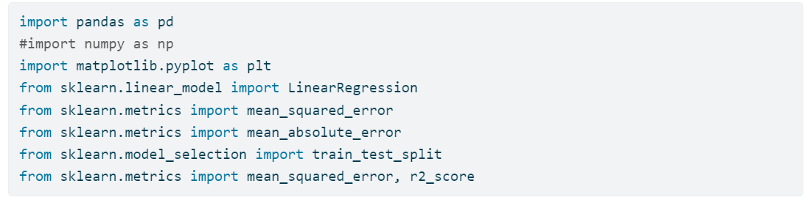
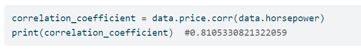
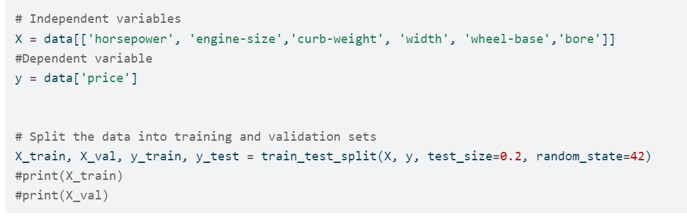
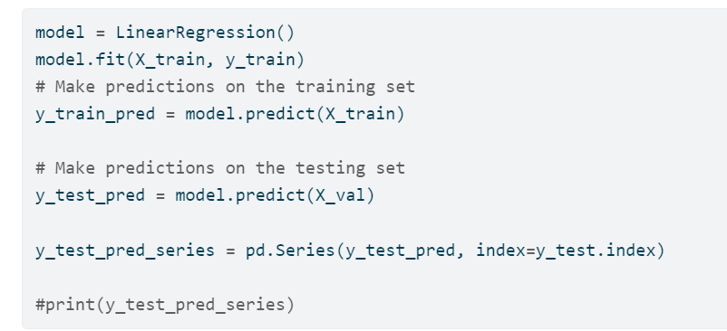
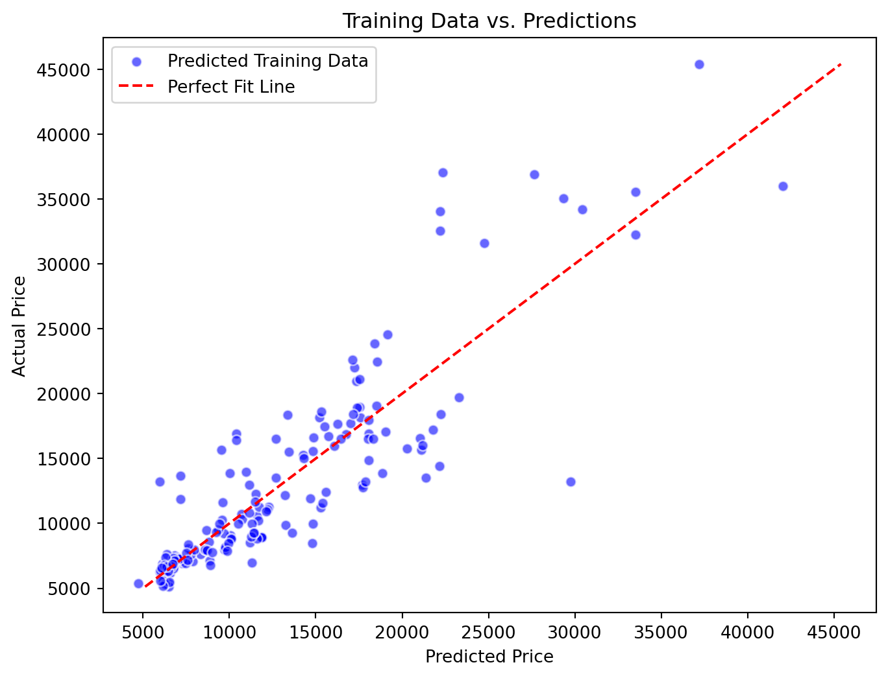
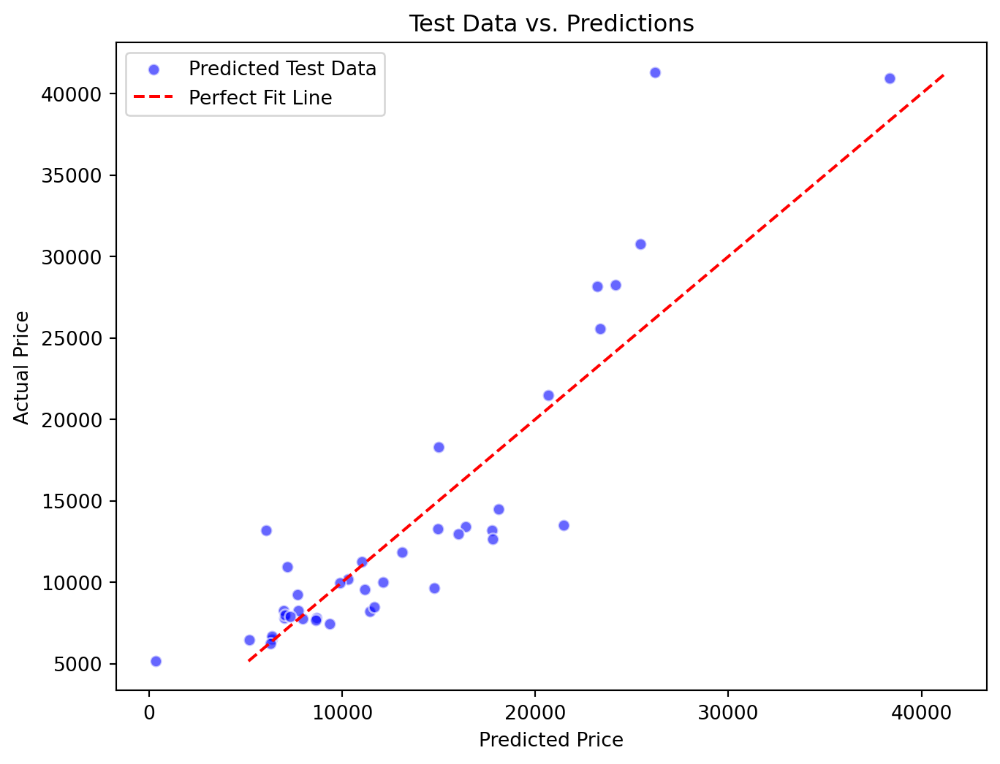

Building a Model Using Linear Regression for Car Price Prediction and Data Analysis
code
analysis
Author
Neeraja Sai Magisetti
Published
July 29, 2024
Problem Statement
The dataset consists of various attributes related to different car models, such as their specifications, performance metrics, and price. Goal is to analyze and model this data to understand the factors that influence car prices and to predict the price of a car based on its features.
Taken a CSV file containing accurate historical data, which includes features and their actual prices. Task is to use this data to build a model that can predict the prices of cars that are not part of this dataset. The goal is to develop a reliable predictive model that can estimate the selling price of any car based on its features.
Code
import pandas as pddata = pd.read_csv('imports-85.data', delimiter=',', engine='python' )print(data.head())
class normalized-losses make fuel-type aspiration num-of-doors \
0 3 ? alfa-romero gas std two
1 3 ? alfa-romero gas std two
2 1 ? alfa-romero gas std two
3 2 164 audi gas std four
4 2 164 audi gas std four
body-style drive-wheels engine-location wheel-base ... engine-size \
0 convertible rwd front 88.6 ... 130
1 convertible rwd front 88.6 ... 130
2 hatchback rwd front 94.5 ... 152
3 sedan fwd front 99.8 ... 109
4 sedan 4wd front 99.4 ... 136
fuel-system bore stroke compression-ratio horsepower peak-rpm city-mpg \
0 mpfi 3.47 2.68 9.0 111 5000 21
1 mpfi 3.47 2.68 9.0 111 5000 21
2 mpfi 2.68 3.47 9.0 154 5000 19
3 mpfi 3.19 3.40 10.0 102 5500 24
4 mpfi 3.19 3.40 8.0 115 5500 18
highway-mpg price
0 27 13495
1 27 16500
2 26 16500
3 30 13950
4 22 17450
[5 rows x 26 columns]
Import Libraries
Code
import pandas as pdimport matplotlib.pyplot as pltfrom sklearn.linear_model import LinearRegressionfrom sklearn.metrics import mean_squared_errorfrom sklearn.metrics import mean_absolute_errorfrom sklearn.model_selection import train_test_splitfrom sklearn.metrics import mean_squared_error, r2_scoreimport seaborn as snsimport statsmodels.api as sm

Libraries
Analysis and Visualization
In order to understand the data that’s available, we must perform data analysis by visualizing the distribution of values in each feature, and the relationships between price and other features.
Code
print(data)
class normalized-losses make fuel-type aspiration num-of-doors \
0 3 ? alfa-romero gas std two
1 3 ? alfa-romero gas std two
2 1 ? alfa-romero gas std two
3 2 164 audi gas std four
4 2 164 audi gas std four
.. ... ... ... ... ... ...
200 -1 95 volvo gas std four
201 -1 95 volvo gas turbo four
202 -1 95 volvo gas std four
203 -1 95 volvo diesel turbo four
204 -1 95 volvo gas turbo four
body-style drive-wheels engine-location wheel-base ... engine-size \
0 convertible rwd front 88.6 ... 130
1 convertible rwd front 88.6 ... 130
2 hatchback rwd front 94.5 ... 152
3 sedan fwd front 99.8 ... 109
4 sedan 4wd front 99.4 ... 136
.. ... ... ... ... ... ...
200 sedan rwd front 109.1 ... 141
201 sedan rwd front 109.1 ... 141
202 sedan rwd front 109.1 ... 173
203 sedan rwd front 109.1 ... 145
204 sedan rwd front 109.1 ... 141
fuel-system bore stroke compression-ratio horsepower peak-rpm \
0 mpfi 3.47 2.68 9.0 111 5000
1 mpfi 3.47 2.68 9.0 111 5000
2 mpfi 2.68 3.47 9.0 154 5000
3 mpfi 3.19 3.40 10.0 102 5500
4 mpfi 3.19 3.40 8.0 115 5500
.. ... ... ... ... ... ...
200 mpfi 3.78 3.15 9.5 114 5400
201 mpfi 3.78 3.15 8.7 160 5300
202 mpfi 3.58 2.87 8.8 134 5500
203 idi 3.01 3.40 23.0 106 4800
204 mpfi 3.78 3.15 9.5 114 5400
city-mpg highway-mpg price
0 21 27 13495
1 21 27 16500
2 19 26 16500
3 24 30 13950
4 18 22 17450
.. ... ... ...
200 23 28 16845
201 19 25 19045
202 18 23 21485
203 26 27 22470
204 19 25 22625
[205 rows x 26 columns]
The dataset contains 205 rows and 26 columns. Each row in the dataset contains information about one car. The task is to find a way to estimate the value in the “Price” column using the values in the other columns. If we can do this estimation for historical data, then we should be able to estimate price for new cars that are not in this data too, simply by providing information like class, normalized-losses, make, fuel-type, aspiration,num-of-doors, body-style, drive-wheels, engine-location, wheel-base, length, width,height,curb-weight, engine-type, num-of-cylinders, engine-size, fuel-system, bore,stroke,compression-ratio, horsepower, peak-rpm, city-mpg, highway-mpg.
Data Cleaning and Preprocessing:
Handle missing values in columns such as normalized-losses and price.
Convert categorical data into numerical formats.
Code
# Handle missing dataimport pandas as pddata = pd.read_csv('imports-85.data', delimiter=',')data.replace("?",'', inplace=True)#print(data)feature_columns = ['horsepower','bore','stroke','normalized-losses', 'price', 'peak-rpm']# Convert selected columns to numeric (if they aren't already)for col in feature_columns: data[col] = pd.to_numeric(data[col], errors='coerce')#print(data)
In the dataset, some columns such as price and horsepower contain “?”. Because of this, the columns are considered as objects, even though they contain numeric values. To overcome this issue, we should replace ? with an empty string, and then convert the object columns to numeric using the pd.to_numeric function.
We could see that class, normalized-losses, wheel-base, length, width, height, curb-weight, engine-size, bore,stroke, compression-ratio, horsepower, peak-rpm, city-mpg, highway-mpg, price are numeric whereas make, fuel-type, aspiration,num-of-doors, body-style, drive-wheels, engine-location, engine-type, num-of-cylinders, fuel-system are objects( string) possibly categorical columns.
Explore some statistics for the numerical columns:
Code
data.describe()
class
normalized-losses
wheel-base
length
width
height
curb-weight
engine-size
bore
stroke
compression-ratio
horsepower
peak-rpm
city-mpg
highway-mpg
price
count
205.000000
164.000000
205.000000
205.000000
205.000000
205.000000
205.000000
205.000000
201.000000
201.000000
205.000000
203.000000
203.000000
205.000000
205.000000
201.000000
mean
0.834146
122.000000
98.756585
174.049268
65.907805
53.724878
2555.565854
126.907317
3.329751
3.255423
10.142537
104.256158
5125.369458
25.219512
30.751220
13207.129353
std
1.245307
35.442168
6.021776
12.337289
2.145204
2.443522
520.680204
41.642693
0.273539
0.316717
3.972040
39.714369
479.334560
6.542142
6.886443
7947.066342
min
-2.000000
65.000000
86.600000
141.100000
60.300000
47.800000
1488.000000
61.000000
2.540000
2.070000
7.000000
48.000000
4150.000000
13.000000
16.000000
5118.000000
25%
0.000000
94.000000
94.500000
166.300000
64.100000
52.000000
2145.000000
97.000000
3.150000
3.110000
8.600000
70.000000
4800.000000
19.000000
25.000000
7775.000000
50%
1.000000
115.000000
97.000000
173.200000
65.500000
54.100000
2414.000000
120.000000
3.310000
3.290000
9.000000
95.000000
5200.000000
24.000000
30.000000
10295.000000
75%
2.000000
150.000000
102.400000
183.100000
66.900000
55.500000
2935.000000
141.000000
3.590000
3.410000
9.400000
116.000000
5500.000000
30.000000
34.000000
16500.000000
max
3.000000
256.000000
120.900000
208.100000
72.300000
59.800000
4066.000000
326.000000
3.940000
4.170000
23.000000
288.000000
6600.000000
49.000000
54.000000
45400.000000
Correlation
The relationship between two numerical features such as price and hoursepower etc. can be numerically expressed using a measure called correlation coefficient, which can be computed using the .corr method from the pandas’ library.
For example to compute the correlation coefficient of price and hoursepower:

This is for price and hoursepower.
Let’s see correlation_coefficient for each numeric feature with price.
Code
correlation_coefficient_columns = ['normalized-losses','wheel-base','length','width','height','curb-weight','engine-size','bore','stroke','compression-ratio','horsepower','peak-rpm','city-mpg','highway-mpg']for col in correlation_coefficient_columns: correlation_coefficient = data['price'].corr(data[col])print(f"Correlation between price and {col}: {correlation_coefficient}")
Correlation between price and normalized-losses: 0.20325417074184238
Correlation between price and wheel-base: 0.5846418222655085
Correlation between price and length: 0.6906283804483649
Correlation between price and width: 0.7512653440522669
Correlation between price and height: 0.13548630756805982
Correlation between price and curb-weight: 0.8344145257702834
Correlation between price and engine-size: 0.8723351674455196
Correlation between price and bore: 0.5434358664188549
Correlation between price and stroke: 0.0823098273897049
Correlation between price and compression-ratio: 0.07110732668194138
Correlation between price and horsepower: 0.8105330821322059
Correlation between price and peak-rpm: -0.10164886620219901
Correlation between price and city-mpg: -0.686571006784468
Correlation between price and highway-mpg: -0.704692265058953
We could observe from the values above, that there’s a high correlation between price and engine-size but less correlation between price and highway-mpg.
We can use the .corr() method to show the correlation coefficients between all pairs of numerical columns.
In the correlation matrix, we observe that features like horsepower, engine-size, curb-weight, and width have high correlations with the price, close to +1, indicating a strong positive linear relationship. On the other hand, length is highly correlated with wheel-base, suggesting that including both in the model might lead to redundant information.
If length and wheel-base provide overlapping information, adding both to the model may not improve its predictive power. Instead, the model might perform better with a combination of features that provide complementary information. For instance, wheel-base and bore might together explain different aspects of price variation that length does not capture.
Therefore, the features horsepower, engine-size, curb-weight, width, wheel-base, and bore are chosen to build a more effective linear regression model.
Linear Regression using a Single Feature
Code
data = data.assign(price=data['price'].fillna(data['price'].mean()))data = data.assign(horsepower=data['horsepower'].fillna(data['horsepower'].mean()))data = data.assign(bore=data['bore'].fillna(data['bore'].mean()))# Independent variablesX = data[['horsepower', 'engine-size','curb-weight', 'width', 'wheel-base','bore']] #Dependent variabley = data['price'] # Split the data into training and validation setsX_train, X_val, y_train, y_test = train_test_split(X, y, test_size=0.2, random_state=42)

Here we can see how train and test data splited
Training the model

Traing the Model
Code
model = LinearRegression()model.fit(X_train, y_train)# Make predictions on the training sety_train_pred = model.predict(X_train)# Make predictions on the testing sety_test_pred = model.predict(X_val)y_test_pred_series = pd.Series(y_test_pred, index=y_test.index)#print(y_test)#print(y_test_pred_series)
Training R²: 0.7687942097124424
Testing R²: 0.8049116113376993
Ploting
Code
# Plottingplt.figure(figsize=(8,6))# Plot training data and regression lineplt.scatter(y_train_pred, y_train, color='blue', edgecolor='w', alpha=0.6, label='Predicted Training Data')plt.plot([min(y_train), max(y_train)], [min(y_train), max(y_train)], color='red', linestyle='--', label='Perfect Fit Line')# Add title and labelsplt.title('Training Data vs. Predictions')plt.xlabel('Predicted Price')plt.ylabel('Actual Price')plt.legend()plt.show()plt.figure(figsize=(8,6))# Plot training data and regression lineplt.scatter(y_test_pred, y_test, color='blue', edgecolor='w', alpha=0.6, label='Predicted Test Data')plt.plot([min(y_test), max(y_test)], [min(y_test), max(y_test)], color='red', linestyle='--', label='Perfect Fit Line')# Add title and labelsplt.title('Test Data vs. Predictions')plt.xlabel('Predicted Price')plt.ylabel('Actual Price')plt.legend()plt.show()


Using the statsmodels library to find the coefficients, standard errors, t-statistics, and p-values
Code
X = sm.add_constant(X)# Fit the modelmodel = sm.OLS(y, X).fit()# Print the summaryprint(model.summary())
OLS Regression Results
==============================================================================
Dep. Variable: price R-squared: 0.779
Model: OLS Adj. R-squared: 0.772
Method: Least Squares F-statistic: 116.3
Date: Sat, 24 Aug 2024 Prob (F-statistic): 3.92e-62
Time: 01:58:03 Log-Likelihood: -1974.7
No. Observations: 205 AIC: 3963.
Df Residuals: 198 BIC: 3987.
Df Model: 6
Covariance Type: nonrobust
===============================================================================
coef std err t P>|t| [0.025 0.975]
-------------------------------------------------------------------------------
const -2.489e+04 1.44e+04 -1.724 0.086 -5.34e+04 3581.183
horsepower 32.9611 13.982 2.357 0.019 5.389 60.534
engine-size 97.3789 13.822 7.045 0.000 70.123 124.635
curb-weight 3.0629 1.579 1.939 0.054 -0.052 6.177
width 175.5085 275.708 0.637 0.525 -368.192 719.209
wheel-base 80.4906 93.642 0.860 0.391 -104.172 265.153
bore -1515.2777 1301.364 -1.164 0.246 -4081.591 1051.035
==============================================================================
Omnibus: 31.978 Durbin-Watson: 1.024
Prob(Omnibus): 0.000 Jarque-Bera (JB): 122.707
Skew: 0.511 Prob(JB): 2.26e-27
Kurtosis: 6.650 Cond. No. 1.44e+05
==============================================================================
Notes:
[1] Standard Errors assume that the covariance matrix of the errors is correctly specified.
[2] The condition number is large, 1.44e+05. This might indicate that there are
strong multicollinearity or other numerical problems.